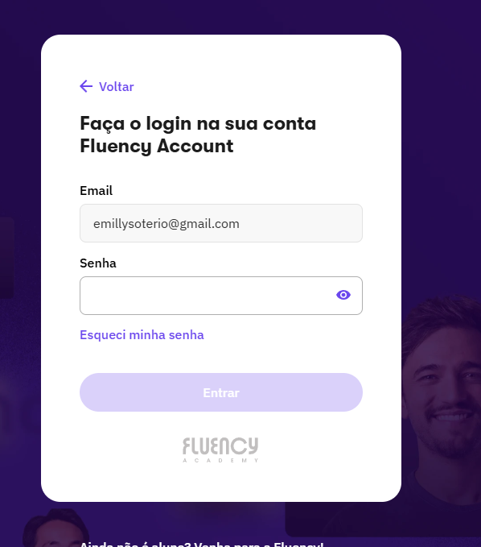
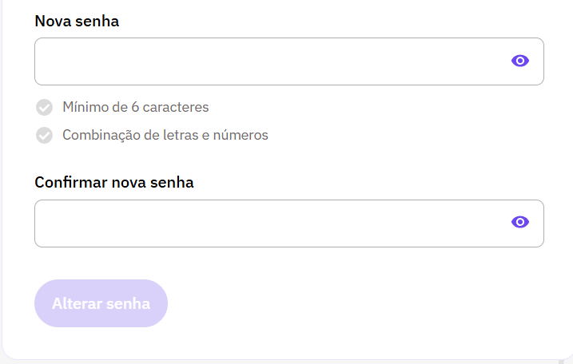
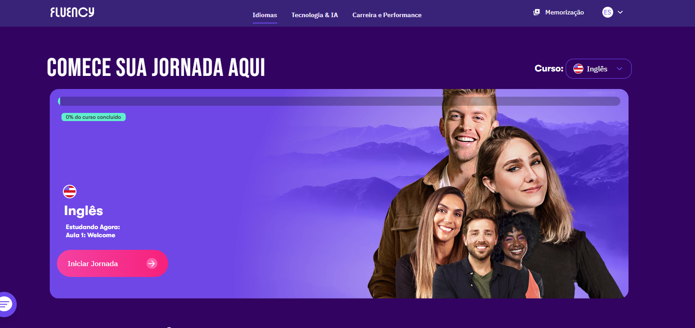
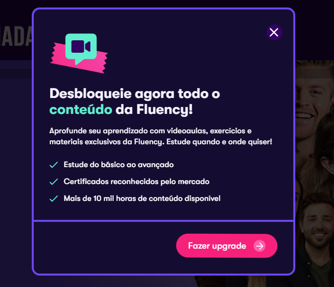
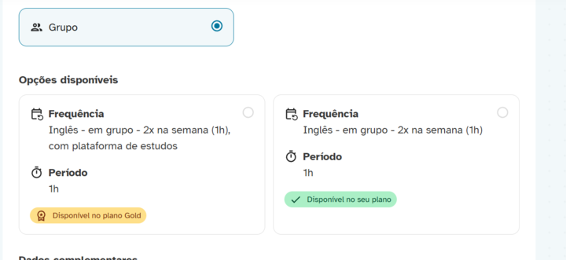
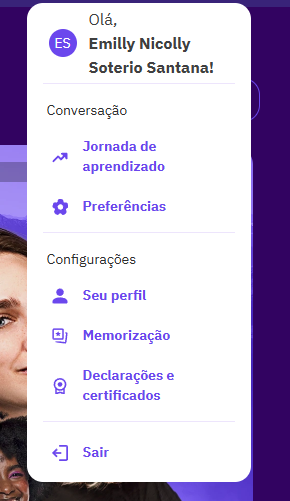
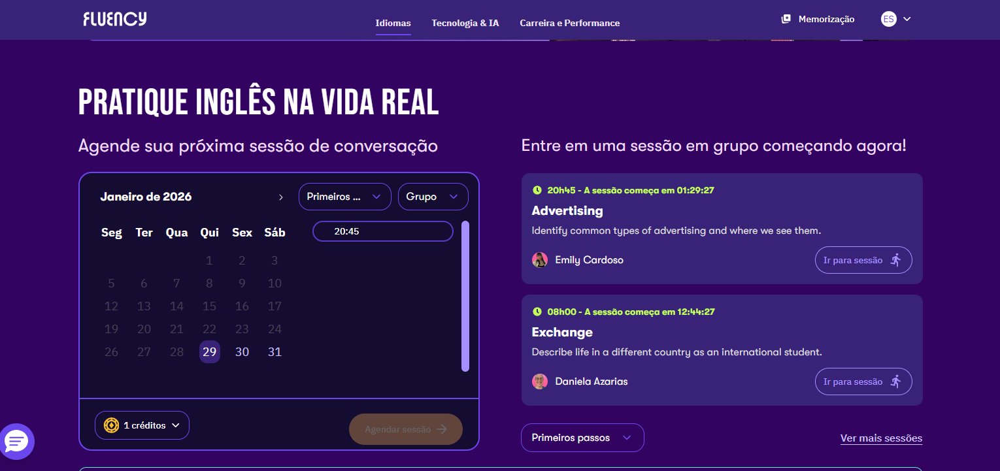

Fluxos de Atendimento – Fluency Academy
Guia prático para resolução de problemas de acesso e criação de conta
Cenário: Colaborador entrou em contato, pois a matrícula foi confirmada, mas não recebeu acesso
Ação 01: Verificação de Cadastro Existente
Acesse Fluency Accounts e insira o e-mail do colaborador na tela que aparece abaixo:

Se ao inserir o e-mail, o sistema solicitar a senha:

- Realize o reset via "Esqueci minha senha".
- Oriente o colaborador a verificar o e-mail para o reset.
Orientação ao Colaborador:
"Fiz o envio do seu acesso para que você realize o reset da sua senha. Poderia me confirmar se recebeu e seu consegue acessar seu curso?"
Ação 02: Orientação para Primeiro Acesso
Se o sistema solicitar "Criação de Senha", envie a macro de primeiro acesso.

Sugestão de mensagem para o colaborador:
Você poderia acessar o link: https://accounts.fluency.io/signin/
Entrar com o e-mail cadastrado na plataforma: xxx
e seguir os passos para a criação de senha?
Depois, poderia me confirmar se conseguiu acessar o curso e se consegue agendar as aulas normalmente?
💡 A Título de Curiosidade: Conhecendo a Plataforma
Informações importantes para suporte quando o colaborador já está logado:
1. Inicio da Plataforma"

⚠️
Dica de Suporte: Ao clicar em "Iniciar Jornada" se ele tiver acesso à plataforma de estudos ele será direcionado para o conteudo do curso, mas se o acesso dele for somente conversação, ele será automaticamente direcionado para a tela de upgrade:

Para saber se ele tem acesso a plataforma de estudos, na Skill visão de colaboradores aparece da seguinte forma:
Caso o plano dela seja diferente do que está com acesso a plataforma de estudos você precisa informar isso. Segue uma sugestão:
Em relação ao acesso à plataforma de estudos, ele não está disponível no seu plano atual.
No momento, você está no plano Silver e, por esse motivo, ao clicar em “Iniciar jornada”, aparece a mensagem
de upgrade, já que o acesso à plataforma de estudos está disponível apenas no plano Gold.
Apesar disso, você consegue agendar as aulas normalmente, pois o seu acesso está liberado
apenas para as aulas de conversação,sem acesso à plataforma de estudos.
⚠️
Dica de Suporte: Ao utilizarem a macro, atentem-se sempre ao plano do colaborador.
É fundamental verificar, na plataforma Skill (visão dos colaboradores), se o acesso à plataforma de estudos permanece no plano Gold ou se houve alguma alteração no plano do colaborador.
Essa conferência deve ser realizada antes de qualquer prosseguimento, a fim de evitar inconsistências no atendimento ou no direcionamento das informações.
2. Menu de Navegação
Através do menu, o colaborador pode visualizar certificados e declarações:

3. Calendário e Agendamentos
Esse é o caléndario para agendar as aulas de conversação.
